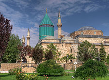

Mevlânâ Müzesi, Konya'da bulunan, eskiden Mevlâna'nın dergâhı olan yapı kompleksinde 1926 yılından beri faaliyet gösteren müzedir. "Mevlana Türbesi" olarak da anılır.
Yeşil Kubbe yani Mevlana'nın türbesi dört kalın sütun (fil ayağı) üzerine yapılmıştır. O günden sonra farklı tarihlerde çeşitli eklemeler yapılmasıyla yapı genişlemiştir. Osmanlı sultanlarının bir kısmının Mevlevi tarikatından olması Türbe'ye özel bir önem verilmesini ve iyi korunmasını sağlamıştır.
Müze alanı bahçesi ile birlikte 6.500 m² iken, yeri istimlak edilerek Gül Bahçesi olarak düzenlenen bölümlerle birlikte 18.000 m²ye ulaşmıştır. Müzenin bahçesinde yer alan I. Selim tarafından yaptırılan şadırvanın göbeğinin Germiyanoğulları Beyliği tarafından hediye edildiği söylenir.
Ücretsiz olmadan önce, bağlı bulunduğu Kültür Bakanlığı'na en çok gelir getiren ikinci müzeydi.
Mevlana hakkında menkıbelerin anlatıldığı Ahmed Eflaki'nin kitabı "Arifler'in Menkıbeleri"nde Mevlana'nın babası için türbe yaptırmak isteyen devrin sultanına "gök kubbeden daha görkemlisini yapamayacağınıza göre zahmet etmeyin" dediği rivayeti yer alır. Türbe, Mevlana'nın ölümünden sonra inşa edilmiştir.
